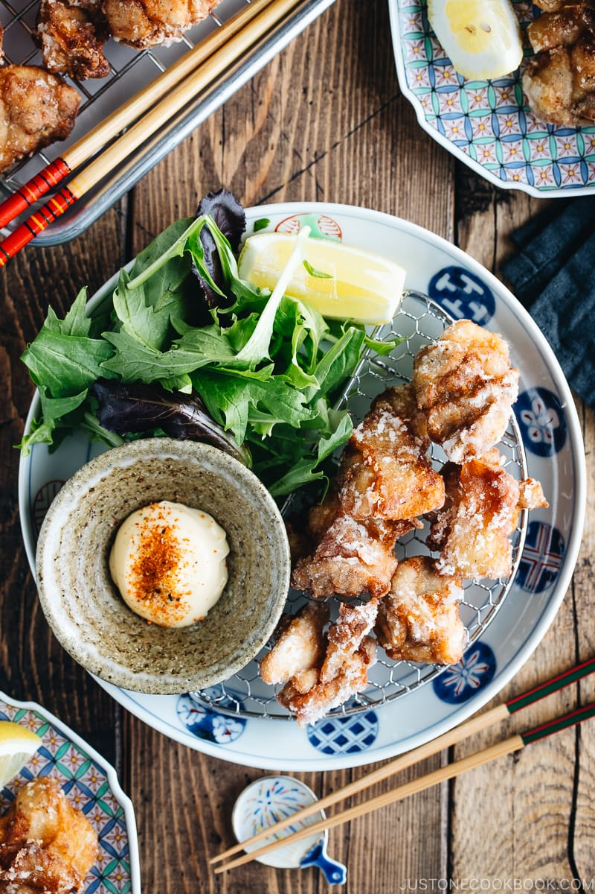

Karaage

Description
You like fried chicken? Of course you do! What is better than fried chicken? Extra crispy fried chicken! Karaage
are delicious double fried nugget sized chicken tights that are coated in potato or corn starch, and with this
recipe you will be getting an extremely crunchy bite full of flavour that you won't regret!
Ingredients
- 1 1/2 boneless, skin-on chicken thighs
- 1/2 tsp kosher salt
- freshly ground black pepper
- 2 Tbsp potato starch or cornstarch
- 2 Tbsp all-purpose flour
- 4 cups neutral-flavored oil (vegetable, rice bran, canola, etc.)
For the Seasonings
- 1 knob ginger
- 1 clove garlic
- 1/2 Tbsp soy sauce
- 1/2 Tbsp sake
- 1/2 tsp roasted sesame oil
Instructions
- Cut each chicken thigh into 2-inch pieces and season with salt and freshly ground black pepper.
- Grate the ginger (you will only need ½ tsp) and mince the garlic.
- In a large bowl, combine the ginger, garlic, soy sauce, sake, and sesame oil. Whisk it all together.
- Add the chicken to the bowl and mix it with your hands. Cover and keep in the refrigerator to marinate for
30 minutes.
- Pour the oil into a heavy-bottomed pot and heat it to 325ºF (163ºC) on medium heat.
- Meanwhile, prepare the potato starch and all-purpose flour in separate piles.
- Important. This is the website creator's secret for extra crunch. Get your starch
slightly wet, just so it starts forming small crystals before covering your chicken.
- Lightly dredge each marinated chicken piece in the flour and dust off the excess flour. Then, dredge it in
the potato starch.
- Continue with the remaining chicken pieces.
- When the oil temperature has reached 325ºF (163ºC) (you'll know it's ready when you insert a wooden
chopstick into the oil and small bubbles appear around it), gently submerge each chicken piece in the oil.
Do not overcrowd the pot; add only 3-5 pieces at a time. If you put too many pieces in at once, the oil
temperature will drop quickly, and the chicken will end up absorbing too much oil.
- First Deep-Frying: Deep-fry for 90 seconds, or until the outside of the chicken is a light
golden color. If the chicken browns too quickly, then the oil temperature is too high. Either put a few more
pieces of chicken in the oil or lower the heat. Controlling the oil temperature at all times is very
important for deep-frying. Transfer the chicken pieces to a wire rack to drain the excess oil.
- The residual heat will continue to cook the chicken as it rests on the wire rack. Continue deep-frying the
remaining chicken pieces. Between batches, pick up and discard the crumbs in the oil with a fine-mesh sieve.
This keeps the oil clean and prevents it from becoming darker.
- Second Deep-Frying: Now, heat the oil to 350ºF (177ºC). Place 3 to 5 pieces of the resting
chicken back into the oil and deep-fry for 45 seconds, or until the skin is golden brown and crispy.
Transfer them to a wire rack to drain the excess oil. Continue with the remaining chicken pieces.
- The left photo shows the chicken pieces after the first frying and the right photo shows them after the
second frying. You can see the chicken pieces on the right are slightly darker in color.
Nutrition
- Calories: 531 kcal
- Carbohydrates: 8 g
- Protein: 29 g
- Fat: 42 g
- Saturated Fat: 19 g
- Trans Fat: 1 g
- Cholesterol: 167 mg
- Sodium: 254 mg
- Potassium: 411 mg
- Fiber: 1 g
- Sugar: 1 g
- Vitamin A: 133 IU
- Vitamin C: 1 mg
- Calcium: 19 mg
- Iron: 1 mg